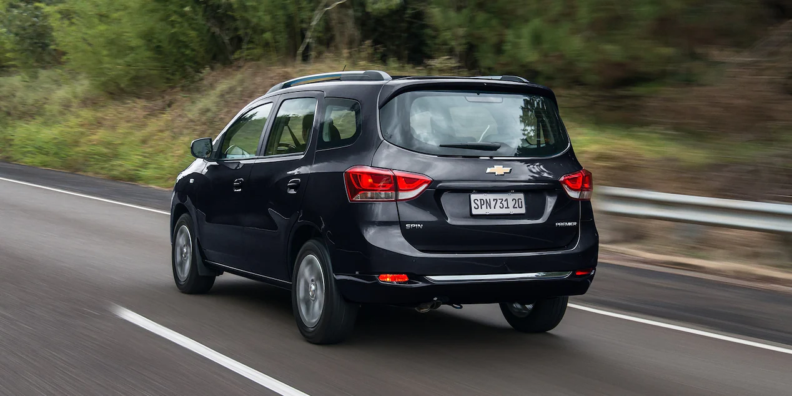

Se viene la nueva Chevrolet Spin con dos cambios que nadie esperaba
Chevrolet avanza con el desarrollo de la Spin, su modelo familiar con hasta siete plazas que produce en Brasil, desde donde llega al mercado argentino.
La nueva Chevrolet Spin incorporará como novedades centrales un instrumental 100 por ciento digital integrado a la pantalla central y seis airbags de serie (en todas las versiones). Además, contará con alerta de colisión frontal, alerta de punto ciego y frenada de emergencia, entre otros elementos de asistencia a la conducción. En este caso, se reservarían para las versiones más exclusivas.
Cuándo llega la nueva Chevrolet Spin
El rediseño de la Spin se pondrá a la venta en Brasil recién en 2025. Para la Argentina todavía no hay una fecha de lanzamiento confirmada. Hoy por hoy, debido a las fuertes restricciones a la importación que impuso el Gobierno de la Nación para evitar la salida de dólares, Chevrolet Argentina vende la Spin únicamente a través del plan de ahorro. No se puede comprar de modo “convencional” en los concesionarios ni con un maletín lleno de dólares.

Qué motor tendrá la nueva Chevrolet Spin
La nueva estética se combinará con el conocido motor naftero 1.8 atmosférico presente desde el nacimiento del modelo familiar. Ofrece una potencia de 105 caballos en el mercado argentino y de 111 CV (con etanol) en Brasil. Al igual que la gama actual, el propulsor se asociará con la caja manual (acá tiene cinco marchas y en Brasil ofrece seis velocidades) o con la automática con sistema de convertidor de par y seis relaciones.
Cómo será el diseño de la nueva Chevrolet Spin
Vista de frente, contará con un doble conjunto de ópticas con luces LED diurnas (estilo ya presente en la nueva Montana) junto con cambios para el capot, la parrilla y el paragolpes. Las novedades se extenderán a la zona trasera; la unidad de pruebas cuenta con un gran camuflaje que esconde las novedades: las ópticas podrían sumar un aplique que las une (igual que la pick up) y la luneta sería más pequeña. Recreaciones del mismo medio anticipan cómo quedaría el rediseño. ¿Será así? Para el interior anticipan la presencia de un nuevo tablero digital integrado al sistema multimedia, un estilo ya visto en otros modelos de Chevrolet. Además, la Spin seguirá ofreciendo la configuración con hasta siete plazas.
ARTICULOS DESTACADOS

Nuevo BMW 430i Gran Coupé Sportline: lanzamiento en Argentina, desde U$S 101.900
La firma de Munich presentó en nuestro país la segunda generación de la variante “Coupé de 4 puertas” del Serie 4, destacándose por su mayor versatilidad y espacio interior. Se comercializa en una única versión, impulsada por el motor TwinPower Turbo 2.0, que desarrolla 258 CV y se acopla a una caja automática de 8 marchas.
Nuevo peugeot 208 gt?
Ya te contamos que el Peugeot 208 producido en Argentina (en la planta de El Palomar) sumaría el motor 1.0 turbo de Fiat. Ahora, la prensa brasileña adelantó que serían dos los nuevos motores sobrealimentados para el hatchback.
Marca francesa presenta su nueva suv
Se presentó en Europa una SUV que se destaca por su estilo coupé y con un nombre heredado de un avión de carreras monoplaza de 1934 que la compañía francesa diseñó para batir récords.

Nueva ram rampage
Ram realizó en Brasil el lanzamiento mundial de la Rampage, su nueva pick up compacta desarrollada y producida en el país vecino, desde donde llegaría al mercado argentino entre fines de 2023 y principios de 2024.